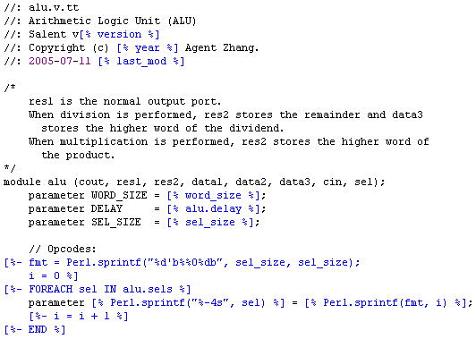
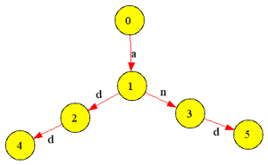
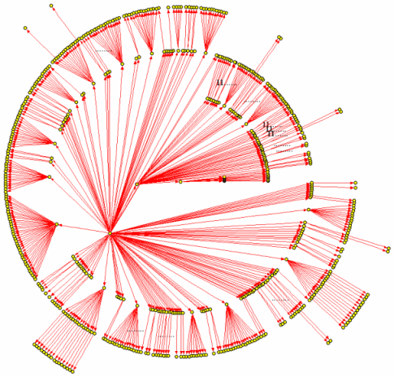
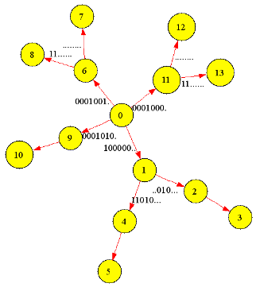
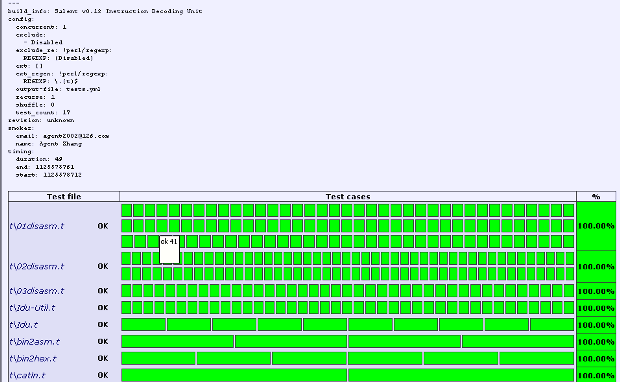
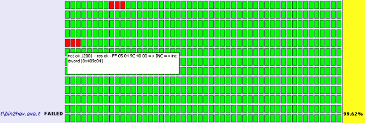

report - Computer Organization Design Report for Salent
本文档描述了于 2005 年 10 月底发布的 Salent 0.08
本次计算机组成课程设计的基本方向是计算机系统的硬件设计。在征得指导老 师的同意之后，我将自己的 Salent 项目作为本设计的题目。本报告概括地 介绍了Salent 项目的主要方面，描述了项目基本的开发过程。
以下列举了有关 Salent 项目的常见问题及其解答。如果你的问题未出 现在该列表中，或者对某个问题有更好的答案，请告诉我。
Salent 项目是章亦春为 适应学校计算机组成课程设计的要求开发的支持 x86 常用指令集的计算机硬件系统，简单地说，就是自己设计一台电子计算机。 该项目自 2005 年 6 月底启动以来，开发工作一直延续至今。
Salent 是本项目最初的两个开发人员仲伟祥 (sal) 和章亦春 (agent) 的 英文名的字母组合： SAL-ENT。
开发该项目的初衷是为了通过动手实作一台 32 位的计算机系统，加深对 教科书上学到的计算机组成方面的知识、原理和技术的理解，同时也为了 探索用软件方式自动化硬件设计与测试过程的具体途径，熟悉硬件设计的 细节。
Salent 项目的开发过程充满了创新与活力。我有意识地效仿唐宗汉 (Autrijus Tang) 的 Pugs 项目"optimize for fun"的做法，以不断向四围发散的方 式领导整个项目的开发。因此该项目的创新至上，乐趣至上的文化是最值得我 们每一个人借鉴的。这种文化为 Salent 带来了极高的开发效率。
Salent 项目使用了许多有趣的新技术来辅助硬件系统的开发，这是同时值得硬 件和软件开发人员借鉴的。
比如我使用 Perl Template Toolkit 这种模板系统来自动生成所有的 东西，这其中包括 Verilog HDL 代码，自动化测试代码，ModelSim 仿真 脚本，项目文档，甚至 Makefile 文件。模板驱动的代码生成技术实现 了“写程序的程序”，虽然它远未实现让计算机为我们写所有的“程序”，但是 我们需要编写的代码确实大大减少了。
另一项有趣的技术是用软件测试的方法来对硬件设计进行自动化测试，比如 回归测试、覆盖测试甚至应力测试。让自己的测试台操纵 ModelSim 仿真器 是硬件测试自动化的核心，我们总结出了一种比较高效和简单的解决方案。
Salent 带动了众多其他的项目，比如我的第一批贡献到 CPAN 的模块， ModelSim::List, Template::Plugin::POSIX, Template::Plugin::Perl, Template::Ast, 和 Win32::Wildcard。另外，我的流程图生成器 Flowviz，Makefile 构造流程生成器 Makefile::GraphViz 及相关联的 Makefile::Parser 也是为了适应 Salent 项目的文档工作而开发的。
我们为 Salent IDU 的测试台开发的 x86 指令随机生成器是如此完美，如此 通用，以至于它可以用于任何 x86 反汇编器项目的测试。事实上，我的测试台 已经捕捉到了著名的 PEDasm 的众多 bug，即便像 NASM 这样主流的软件， 我们也捕捉到了其自带的反汇编器 Ndisasm 的一个很微妙的 bug. 我记得这 个 bug 与 FPU 指令集中的一条指令的操作数顺序有关。目前我尚未就此问题 通知 NASM 团队。
还有一个很有趣的“副产品”十分有趣，那就是我们轻松得到的纯 Perl 版本的 x86 反汇编器实现。这个东东完全可以独立成一个 Perl 模块，贡献到 CPAN 网络。我们可以利用这个 Perl 实现做许多有趣的事情。:=)
Salent 项目已处于现代的版本控制系统 Subversion (SVN) 的管理之下，因此 你总是可以从 Salent 位于德国的 SVN 中央服务器
https://svn.berlios.de/svnroot/repos/salent
获得。该项目允许匿名下载。嗯，或许你需要一个 SVN 客户程序来下载整个项目， 而不是从 Web 浏览器中一个文件一个文件地复制。
对于 Windows 用户而言，TortoiseSVN 是很值得一试的。如果你希望实现离线 操作，SVK 则是非常不错的选择。
Salent 项目的最终产品是硬件设计，当然会使用到硬件描述语言。我经 过权衡，最终选择了 Verilog HDL。不过，值得一提的是，在设计与测试 环节中，我还广泛使用了众多软件编程语言以辅助硬件开发。这其中包括 Perl5，C/C++，Tcl，以及 MASM。
说实话，从学校教授 VHDL 的第一天起，我就对它没有什么好感。即便是很简 单的设计，用 VHDL 描述起来也显得相当笨拙。在学习 Verilog HDL 之前 我在 Google 中稍稍搜索了一下“Verilog vs. VHDL”，结果看到 Verilog 占了压倒性优势（至少是在美国）。Salent 项目走到今天，事实也已经证明我 当初的选择是明智的。
按照计划，Salent 芯片将支持整个“非 64 位通用目的指令集”和“FPU 浮点 运算指令集”。至本文档编写之时，Salent 的指令译码器（IDU）已能正确 解译上述两个指令集的所有指令了。
Salent 由以下模块组成：
Woot! 我在开发过程中得到了许多人的帮助。下面只能择要录之：
另外檀宝权和代晓珂同学虽然没有直接参与到项目开发中来，但他们都曾与我就 Salent 中 的一些设计上的问题交换过看法。当然了，还有 QQ 上的许多好朋友，我很感激他们在我 沉醉于 Salent 开发的两个月间耐心地倾听我的“技术讲解”。这些讲解不仅在当时就帮助我 自己澄清了许多问题，理清了思路，而且现在还成为了项目文档（包括这篇文档 ）重要的素材 来源。
目前，逻辑算术单元 ALU 和随机访问存储器 RAM 已经完成设计与测试。指令 译码器 IDU 已完成状态机和基本算法的测试（通过 IDU 的 Perl 和 C 版本 的纯软件实现），并且已经得到了 Verilog HDL 的实现代码。但是 Verilog HDL 版本的实现尚有待于进行测试。内存管理单元 MMU 的 Verilog HDL 实现 由万珣新编写，他已用 ModelSim SE 对他的设计进行了手工测试。
作为整台模型机之核心的指令执行单元（IEU）目前只完成了一些初步的准备， 开发 工作尚未正式启动。
这篇文档的主体使用 Perl 的 POD (Plain Old Document) 格式制作的。你现在看到 的是 Pod::Html 模板自动生成的 HTML 版本（使用 ActivePerl 5.8.7 的 级联样式表文件 Active.css 进行渲染）。
文档的许多素材来自我最近几个月的 QQ 聊天记录（通过使用我编写的 Qooqle 搜索引擎和 Mozilla 浏览器进行汇总）。还有不少内容来自 Salent 项目在开发过程中留下来的日志文 件（分散在各个子目录中的 Changes 文件）。
我们需要做的并不仅仅是一台模型机。那是什么？ 我们要做的是一台与 IA-32 指令集实现二进制兼容的可以直接跑 C/C++ 程序的“计算机系统” 怎么样，够疯狂的吧？二进制兼容耶，而不仅仅是汇编语言级别上的功能兼容。
我们的目标是让高级语言的编译器生成的 .exe 文件能在咱们的模型上跑起来。 为此我们必须支持 IA-32 指令集相当大的一个常用子集。当然了，如果能让 Perl 和 Java 也跑起来，那就更好了。不过这还有很长的路要走。
这台机算机除了 CPU 之外，还有一些外部设备，比如 RAM、I/O 等等。
我在项目开始之初就考虑了一下模型机的设计与测试的总策略。
我想如果在一开始就考虑哪些东东是 Synthesizable，哪些不可以，那么我将 寸步难行。所以我决定 只要我的设计能单纯地进行仿真就可以了。日后有机会再把不能综合(synthesis) 的代码改成可以综合的。事实上我现在也搞不清到底哪些是可以综合的，因为这是 由 Vendors （供应商）自己决定的。
另外，我决定不使用 VHDL 语言，它实在 是太难看了。经过比较，我发现 Verilog HDL 是更好的选择，它不仅记法很干 净，而且没有 VHDL 中类型转换方面的困挠，更重要的是它也是 IEEE 标准的一 部分，呵呵。
我在网上找到一个名为 X-HDL 的工具，它可以在两种 HDL 语言之 间进行自动转换——嗯，非常有趣的东东哦。不过还是有些限制的。如果我使用 Verilog 语言的高级特性，在翻译到对应的 VHDL 语言时可能没有对应的等价物。 因此我被限制在一个子集之中。不过如果我能自己提供 Verilog 在 VHDL 中的 “等价物”（比如 ShiftRight函数）的库实现的话，可以使我能使用的子集接近 全集。但后来我还是放弃了同时维护 Verilog 和 VHDL 两种语言的实现版本的 想法。
设计 RAM 时遇到的一个简单的问题是，如果地址是 32 位，而且是 byte-addressable， 那么 RAM 是否应该自己推导到“字”(word)的地址（即忽略掉32位地址的最后两个bit）？ 唔，还是由处理器负责将字节地址转换为字地址？不过那样的话，地址总线上的地址就不再 是 32 位长，而是 30 位长了。
在设计计算机系统的时候我必须把这个问题考虑清楚，特别是将“字”切片为“字节”的问题。再 有就是“字”的地址与“字节”的地址之间的相互转换。
目前的 RAM 内部按字存放，同时地址的长度也是一个字。因对 RAM 的直接读写都是按 字进行的，即便传递给 RAM 的地址都是字节地址。RAM 在内部忽略地址的最后 2 个比 特(对于 32 位 RAM 而言），自己推导出字节所在的字的地址。
RAM 的 Verilog 实现是通过 Perl Template Toolkit 的模块自动生成的，因此它的 位数是可以配置的。
RAM 使用基于 Perl Template Toolkit 的自动化测试框架对其进行了比较彻底的测试。应用测试台已对 8 位 RAM，16 位 RAM，32 位 RAM 和 64 位 RAM 进行了测试。
在设计 ALU 的时候，遇到一个问题是 PSW (Process Status Word) 是作为一个单 独的模块来实现呢，还是作为其他模块，比如 ALU 的一部分。众所周知，PSW 与 ALU 有 关联，ALU 每计算出一个结果都应当设置 PSW 中的相应的位(bit)。但是 Intel 文档 对每一条 x86 指令对 PSW 的影响都作了具体的说明，因此更合适的做法是将 PSW 作为 一个独立的模块，由 ALU 和指令执行单元 IEU 来对 PSW 进行读写。
我们的 ALU 支持以下操作:
ADD ADC SUB SBB MUL IMUL DIV IDIV
AND OR XOR
SHL SHR SAL SAR
ROL ROR RCL RCR
NOT NEG NOP
我们的目标就是提供 Pentium4 所提供的非64位通用目的的 ALU 操作 包括有/无符号的加减乘除、算术/逻辑移位、带/不带 CF 的位旋转 (Rotate) 、按位与/或/非/异或。应该没有什么重要的遗漏，因为我可是对照着 Intel 文档来做的噢。
ALU 不是做指令译码器，单纯的 ALU 操作没有我们想象的那么多么。 我们的指令译码器支持 419 条 x86 常用指令。指令执行单元就不可能支持 那么多机器指令了，除非我能得到更多人的帮助。
ALU 的 Verilog 源代码是从模板自动生成的。Salent 项目中使用的模板都 是 Perl Template Toolkit 的模块（又称为 TT2 模板）。
下面是一个例子（来自 ALU Verilog 实现的模板文件）：

我为 Salent 的 RAM 和 ALU 设计出了一个通用的自动化硬件测试框架，从测试输 入的生成，到测试结果的验证，全部自动化，无需人的干预。
我们酷酷的基于 ModelSim 的测试台的构建技术可是真正意义上的自动化测试：随机产生合 法的输入信号，然后自动检查仿真器的输出……
我们已经用该框架对 Salent 模型机的 RAM 和 ALU 部件进行了彻底的测试。测试找出了许多很微妙的 bug，有的是我 的 Verilog 实现的，有的是我的测试代码本身的问题，还有的是 ModelSim 仿真器的 BUG. 无论如何，由于输入信号是测试台随机生成的，只要运行足够长的时间，便可以发现 几乎所有的 bug. 只要捕捉到 bug，纠正一般都是很直截了当的。
我现在对我们的 RAM 和 ALU 已建立起了足够的信心。诚然！测试台迫使项目总是在正确的可以控制的轨道上前进。 我们每作一处改动，就运行整个测试集，确保所作的修改没有碰坏其他原本可以工作的东西。 同时这也可以通过测试台生成的报表，评价所作修改的实际效果。
不过，测试台运行时间比 较长，大约是十几秒到几十秒不等。比如 ALU 的测试集，运行一次，将进行 6887 个测试。 我注意到 ModelSim SE 6.0 的仿真器在性能上远不及 5.7d 这个较老的版本。真奇怪。 在我这台装有 ModelSim 6.0 的 Pentium4 2.6GHz 的机器上运行 ALU 的测试集还不 及我家那台装有 5.7d 的 赛扬 330 的破机器。我估计原因可能是 6.0 做得太庞大了。
每次运行，测试台实际执行的测试都不一样，因为输入都是随机生成的，而且种子是使用的系 统时间。我们用模板生成任何东西，从 Verilog 代码到 Perl 程序，从 Tcl 仿真脚本到 POD 和 HTML 文档，还有写程序的程序……
I'd rather write programs to write programs to write programs.
下面是 ALU 测试台的一次典型运行所生成的测试报表：
alu.........ok
talu1.op....ok
talu2.op....ok
talu3.op....ok
talu4.op....ok
talu5.op....ok
All tests successful.
Files=6, Tests=6887, 12 wallclock secs ( 0.00 cusr + 0.00 csys = 0.00 CPU)
Timing Result: 525.359000 sec on average.
一共花了 525 秒耶！
在测试中，如果发生错误，测试台会报告发生错误的具体位置，比如文件名、行号、仿真时 间区间、ALU 输入信号的取值、等等。这些信息给排错带来了极大的便利。
下面是 RAM 的一个早期版本因 64 位问题而让我们的测试台“报怨”的例子：
...
tramX_5.rw..........ok
tramX_6.rw..........ok
tramX_7.rw..........ok
tramX_8.rw..........NOK 8
# Failed test 'tramX_8.rw: line 7: r 'd0 0*abcd (@ 55 ~ 103)'
# in tramX_8.rw.t at line 26.
# '00000000zzzzzzzz'
# doesn't match '(?i-xsm:^z+$)'
tramX_8.rw..........NOK 12# Failed test
'tramX_8.rw: line 8: r 'd15 ? (@ 103 ~ 141)'
# in tramX_8.rw.t at line 31.
# '00000000zzzzzzzz'
# doesn't match '(?i-xsm:^z+$)'
...
Failed Test Stat Wstat Total Fail Failed List of Failed
-------------------------------------------------------------------------------
...
tramX_4.rw.t 17 4352 54 17 31.48% 8 12-13 17-18 25-26 30-31 35-
36 43-44 48-49 53-54
tramX_8.rw.t 49 12544 140 49 35.00% 8 12-13 17-18 22-23 27-28 35-
36 40-41 45-46 50-51 55-56
63-64 68-69 73-74 78-79 83-84
91-92 96-97 101-102 106-107
111-112 119-120 124-125 129-
130 134-135 139-140
Failed 4/18 test scripts, 77.78% okay. 238/3627 subtests failed, 93.44% okay.
仲伟祥同学在我的框架基础上编写的RAM 的“随机应力测试台”捕捉到了 ModelSim 仿真器的一个 bug. 太棒了！这种高强度的随机测试对包 括仿真器在内的每一个部件，每一行代码都施加了巨大的压力，不是么？ Well done! Sal++
MMU 是 Memory Management Unit 的首字母缩写，目前的主要功能是将“字”切片为“字节”。 毕竟我们的 RAM 是按“字”来存取的，而处理器却时常按照“字节”来读写。MMU 的作用就是协调 这种差异。它在处理器和 RAM 之间扮演着“中间人”的角色。
我在 MMU 的 specification 中这样写道：
The MMU in Salent is reponsible for slicing "words" to "bytes". It bridges the gap between the processor and RAM. The RAM operates in words, but the processor usually wants to access one single byte, two successive bytes, or a whole word.
MMU will play such a role that from the viewpoint of the processor, the memory is byte-addressable, and it is only word-addressable from the viewpoint of RAM.
The I/O ports for the MMU can be divided into two separate sub-interface, one for the processor, and one for RAM:
RAM <=> MMU <=> Processor
The sub-interface of MMU for RAM is exactly the same as the interface of RAM. MMU should take the full reponsibility to interact with RAM, including setting data bus, address bus, rw and strb control signals.
Strobe signal issued by MMU itself to start the RAM.
Read or write signal issued by MMU
The sub-interface of MMU for processor is very simple, consisting of only four signals:
Memory Address Register storing the address of the leading byte
Memory Data Register storing the byte accessed or written by processor
Strobe signal issued by procssor to start the MMU.
Read/Write'
IA-32 指令集还有一种 64 位的扩展模式，名为 IA-32e，对 64 位指令的支持并 不在我的 TODO 列表中。
我们的 IDU 设计以及建立在它之上的 x86 反汇编器是由 代码生成器自动生成的，而且其支持的指令集可以动态地进行配置。我们在一个配置 文件中添加一条机器指令的编码模式及对应的汇编语言格式，运行Make 之后，反汇 编器将自动对新增指令提供支持。这个配置文件的格式就是 Intel IA-32 手册的 指令码表的格式。在 Salent 项目目录中，名为 encoding.txt.
x86 指令集的机器码格式在开发初期曾让我感到非常头痛，因为指令长度居然是变长的， 而且例外非常多，没有明显的规律可循。一条机器指令从单个字节到十几个字节不 等，而且根本不与字 (word) 对齐。连 op code 都是从一个字节到三个字节不 等的，更不用说寻址模式和操作数长度了。这给机器指令译码器的设计与测试带来 了很大的困难。
由于 IDU 支持的指令数目众多，必须要找到一种自动化的方法能构造出 IDU 的实现， 同时也必须找到一种自动化的方法对 IDU 进行彻底的测试。
另一问题来自 Intel 的指令码表本身。虽然"IA-32 Intel Architecture Software Developer's Manual"中的指令码表的格式已经相当规整，但是却并不是专门为构造指 令译码器和汇编器而提供的，因此码表中有一些含混的地方，有一些排字错误 (typos)。 有的问题在解析码表的时候就能捕捉到，比如一些影响到解析的 typo，但有的问题就只能 在后期模板测试的时候才会浮出水面。
于是我从一开始就考虑让我的程序直接去“阅读” Intel 的机器码的码表文档，然后 生成对应的模式 AST，并将之转换为状态机，最后生成 Verilog HDL 描述。整个过 程完全自动化，无需人的干预。用这种方法得到的状态机是与具体的实现语言无关的， 所以不仅可用于生成 Verilog 描述，也能生成 C/C++/Perl 程序。
为了理解 IA-32 的指令码表，开始的几周我一直在研读 Intel 的 "IA-32 Intel Architecture Software Developer's Manual". 此外，我还精读了英文版的"Computer Organization"，NASM 的帮助，还有 MASM 方面的的基础知识…… 即便如此，我还是经过很多天的冥思苦想才最终搞清楚 了 Intel 文档中的几章的内容。本项目的一个重要合作者仲伟祥也花费了大量的时间 “苦读”这些材料。
我们使用的 IA-32 指令格式的码表来自 "IA-32 Intel Architecture Software Developer's Manual" 第二卷中的 Appendix B.
在软件技术上，我还学习 Verilog HDL 语言，神奇的 Perl Template Toolkit， 以及 ModelSim SE 仿真系统的高级特性。
具体说来，即让我的 perl 程序自己读 Intel 的文档，然后输出译码器的实现， 可以是 perl 版本的，也可以是硬件描述语言的版本（比如 Verilog HDL）。 基本过程是解析指令模式，生成模式匹配的抽象语法树（AST），再通过对 AST 的遍历（层次遍历哦）生成状态机模型（有穷自动机），最后通过输出代码的模 板文件产生最终的译码器实现。
这是典型的“写程序的程序”。由于状态机模型是与输出的实现语言无关的，因此 提供 Perl 代码的模板就产生 Perl 版本的译码器程序，提供 Verilog 代码 的模型就产生 Verilog 版本的译码器描述，C/C++ 还有 Java 还有 VHDL 都 依此类推。我有计划再在 Salent IDU 项目中引入 Java, C#, JavaScript, Visual Basi, 甚至于 Haskell 和 Perl6 这些语言。如此之多的语言和文化 在 Salent 项目中交汇成一股伟大的洪流，势不可当！
这意味着一旦我们得到了一种语言下的译码器实现，就可以轻而易举地获得其他 语言的实现。要做的只是提供这种语言下的模板文件就可以了。而模板文件都是 大同小异，代码很少的。
呵，技术上的路径表明，我们最后得到的可能远远多于我们最初所期望的。多个版 本的译码器耶，各种各样的语言哦！从 Perl 到 Verilog，从 C/C++ 到 VHDL…… 神不神奇啊？ 它们都是多么不同的语言啊。它们之所以可以共享一棵 AST 就在于 “状态机”这种东西的通用性。
我在邀请我们专业的何杉同学为我们的 Salent IDU 提供 Java 实现的模板的 时候曾经在 QQ 中这样向他解释如何将我们已有的 Perl 实现的模板改写为 Java 实现的模板：
"Well, it's quite straightforward. The two versions of IDU implementations (the Perl one and Java one) will share the same AST, I mean Abstract Syntax Tree. The best way to comprehend ASTs is to simply reguard it as a complex data structure. Hmm...maybe something like a tree, an array, a hash, or so. To generate the final implementation, an AST is not enough. The info stored in the AST is only concerned with the state machine (or the state graph), hence There is nothing specific to the programming language we finally choose.
"In order to generate the IDU programs automatically, we provide a full-fledged AST and a well defined program template to the computer. The computer will combine the two to generate the final implementation, say, the final program. The key is combining an AST with a program template. So it's another example of a program that writes another program.
"The AST describing the state machine is now ready. What I asked you to do is basically to provide a template that depicts the layout of the final Java program's source code. The Perl template we've already obtained, the Java template you'll write, and even more templates in the future will have a similar appearance. They'll be pretty alike. "
当我对我们班的一个同学说，Intel 手册的指令码表中有很多 typo （键入错误）的时候，他反驳 我说，这是“难免”的。我反驳道，我们 Salent 项目中的码表文件却可以完全避免 typo。 他很怀疑我的说法，问我为什么？我告诉他，我们的文档，IDU 实现，以及我们 的 IDU 测试台都是根据一棵 AST 由程序自动生成的呀！而这棵 AST (Abstract Syntax Tree) 又是从 Intel 的文档自动转换过来的。因此 Intel 文档中的所有 typo 都会反映到我们的 idu 实现和 idu 测试台的代码中，并最终被测试台捕捉到。 由此可见，我们使用的真的是一种神奇的技术！
记得“数字逻辑电路”课程中接触到的“状态机”么？就是那种东西。我们在当时用 状态机构造“二进制序列检测器”的？ 状态图？ 你可能还不知道它有多么强大、多 么通用呢！在编译理论中我们还会以更近的距离接近它。它对译码器、编译器或者 类似的识别模式的程序和硬件设计而言简直是无价之宝！非常优美，非常抽象，非 常简洁。更重要的是:非常实用。
状态机是这样一种抽象的机器，这个机器能够维护并且切换当前的状态。它根据 外部的输入和内部产生的输出来得到状态切换的条件。状态机是设计软件和设计硬件的基 本工具。与其说它是一台“机器”，不如说它是一种数学模型。其实状态机的核心思想非常 简单，我想打一个比方来加以说明。
比如我想“识别”出两个单词 add 和 and，现在我们可以用状态机来完成“识别”的任务。 令状态 0 为初始状态。 首先，我们读取未知单词的第一个字母，比如说是 a，我们便切换到状态1，否则跳转到出 错状态，因为两个词都是由 a 起始的。接着，我们读 取第二个字母，这时就要分三种情况进行讨论，如果得到的是 d，就跳转到状态 2；如果 是 n ，则跳转到状态 3；否则就跳到出错状态。然后，我们读取第三个字母，如果当前 状态是 2，而且当前的字符是 d，则完成对 add 的识别。如果当前状态是 3，而当前的 字符是 d ，则完成对 and 的识别。其余情况，跳转到出错状态，即匹配失败。上面这个 例子可以用来识别英语单词。
下面是这个例子中的状态机的示意图：

图中的每一个节点（圆圈）都代表一个独立的“状态”，节点之间的箭头表示状态之间的转 换条件。
我的一位高中同学由此想到了“文曲星”的工作原理。呵呵， 我也觉得有点儿类似哦——嗯，真的很相似。
事实上，状态机是无处不在的。状态机在编写识别性质的程序和电路的时候，简直是无价之 宝。比如识别机器语言的集成电路，识别各种高级编程语言的编译器和解释器，还有很多一 般性的程序，状态机无处不在！有时候我们即时自己使用了，可能还未发觉。这并不是我在 开发 Salent 项目的过程中刚刚学到的知识，事实上，我已经使用了多年了。从高三开始 我就有意识地在自己编写的代码中大量地使用。状态机是编程领域比较有趣的东东。我从高 一开始自学编程，在高二时学习了计算机专业的《编译原理》课程，在那儿我首次接触了状 态机理论。不久我就发现它是如此地强大，并最终在 Salent 的 IDU 中将这种威力发挥 到了近乎神奇的地步。
IDU 的状态机规模非常庞大，共有 590 个状态。我不认为用手工的方式能够在可 以接受的时间之内圆满地完成它。下面是用 Graphviz 自动根据 IDU 状态机的 XML 描述生成的示意图：

为了研究和测试之方便，我还生成了一个只包含了七条指令模式的“袖珍版”状态机：

Perl IDU 是我得到的第一版本的 IDU 实现。它的开发过程完全是测试驱动的 (test-driven)。在不断地提高 Perl IDU 的测试通过率的过程之中，我也不断 地修正状态机乃至于指令码表中的错误。而这正是开发 Perl 版本的 IDU 的主要 目的之一。如果我首先编写 Verilog HDL 的模板，则测试与排错的难度都会大大 提高。
为了对我们的指令译码器进行应用测试，我自然需要根据机器指令的码表，编写一个能 随机生成合法的 IA-32 机器码的Perl 程序。码表仍然来自 Intel 手册 2B 卷的 Appendix B, 因此严格覆盖了整个"非64位通用目的指令集”和整个“x87 FPU 浮点 指令集”。事实上，每次运行生成器，每一种指令模式都会生成至少一条机器指令，而 每一种寻址方式、每一个可能操作数组合，都有可能生成。这对于测试我们的反汇编 器而言，简直是无价之宝，因为一般的 EXE 文件代码段中的指令在整个 x86 指令集中 的覆盖率只有 30 ~ 50%，而且重复率高，用于应力测试，效果很不理想。但使用一些 典型的 EXE 文件的代码段中的机器指令序列来测试我们的 IDU 仍是测试台的一个 重要的组成部分。
我已用一些第三方的反汇编器对我的 Perl 脚本生成的 x86 机器指令进行了测试。
一开始，我们只是测试 IDU 译码得到的指令名和指令长度，因为这比较简单（当然了， Intel 指令集中众多的“别名”和前缀码 (prefix byte) 是比较难处理的部分）。 指令名测试虽然简单，但却非常有效，能状态机和 IDU 模板的大部分问题。
然而，指令名测试毕竟是不全面的，我们无法对一些寻址方式和取数结果进行检验。因 此，我们又在 IDU 的基础上实现了一个汇编代码的输出后端。只有让 IDU 将译码的 结果输出为 NASM 汇编代码的形式，我们才能直接将之与 NASM 的反汇编器输出进行 精确比较。事实上，一个生成汇编代码的后端加上 IDU 指令译码器本身，便构成了一个 x86 反汇编器。其实，支持如此之大的指令集的 x86 反汇编器本身就已经是一个极端复 杂的项目了。我们不得不为自己的工作而感到骄傲。
由于有了如此完美的指令应力测试台，我们的反汇编器的正确性与稳定性毫不亚于 NASM 自带的反汇编器。事实上，我们的测试台居然捕捉到了 NASM 的 FPU 指令集处理部分的 一个微妙的 bug. 自动化测试万岁！应力测试万岁！
在 Perl IDU 通过全部的测试集之后，我们又得到了 C 语言的指令译码器实现。 C 版本的测试过程相对于 Perl 版本而言就比较麻烦，比较繁琐了。 我花了不少时间来琢磨如何让我的 C 版本的 IDU 面对非法输入时能够不崩溃。 我毕竟在使用 C 语言。检查输入记号的合法性是必须的。我的高中同学吴元斌曾在 QQ 上问我 C IDU 究竟是怎么个崩溃法，我告诉他是内存非法访问，即什么"该内存不能为 read". 他说这个错误很常见，没必要去修复。我马上对他说，我写代码的目标是“零缺陷”， 所以哪怕是再简单的程序，我都会尽量进行彻底的测试。这就是我的追求，就像艺术家对完 美的追求那样。确实，C 的出错处理太难错了，我真怀念 Perl 中强大的文本处理能力。
当然，必须指出的是，因为有了经过彻底测试的 Perl 版本的实现在手，C 版本的 IDU 的开发已经变得容易许多了。
最初，我的 C IDU 和我原来的 Perl IDU 共享了绝大部分的测试集，但不是全部。嗯， 就是机器指令随机生成器驱动的 NASM 应力测试集 (pat_cover). 后来，在吴元斌的鼓励下，我又更进一步，让两种语言版本的 IDU 共享全部 100% 的测试集。 事后我分析了一下，无论从理论还是从技术上这都不成问题，只要我的 C IDU 提供和原来的 Perl IDU 全部相同的接口 (interface) 就可以了。我不禁要高呼：“封 装万岁！面向对象万岁！” 实践证明，好的设计往往能自动适应未来变化的需求，呵呵。
按照这种思路，在这种测试框架下，以后新增加的所有测试都会自动地为两个版本的实现所 共享！而且，我以为不仅 Perl 与 C 实现可以完全共享测试集，我那两天经 过思考后认为，像 C#, VB, Java 甚至于像 Verilog HDL 这样的硬件描述语言的实现都可以共享同一个测试台！具体做法是 是通过 COM 接口、Inline::* 模块或者 C 进行语言之间的“过渡”。
我们的 IDU 项目测试台能够生成完美的 HTML 测试报表。该项技术称之为 SMOKE. 我曾经兴奋地在 QQ 中写道：
smoke, smoke, i'd love to smoke ... ah, no smoking please! :=)
以图形化的方式显示测试集的结果的技术有专门一个术语，那就是 SMOKE，正好是抽烟的意思。 在输出的 smoke.html 中看到的是一个巨大的方块矩阵。其中浅绿色的方块表示顺利通过的测试， 红色方块表示失败的测试。而深绿色方块表示未通过的 TODO 测试，浅黄色表示意外通过的 TODO 测试。另外值得一提的是，如果你把鼠标悬停在任何一个彩色方块的上方，持续几秒 钟，会出现一个黄色的小帮助，告诉你相关的调试信息。
生成报表只用了一个命令:
nmake smoke
该命令在屏幕上的输出为:
perl util\run-smoke.pl . smoke.html
Sorry, concurrency not supported on your platform
t\Idu.t
t\bin2asm.t
t\bin2hex.exe.t
# Failed test (t\bin2hex.exe.t at line 83)
# Failed test (t\bin2hex.exe.t at line 84)
Use of uninitialized value in pattern match (m//) at t\bin2hex.exe.t line 101.
Use of uninitialized value in pattern match (m//) at t\bin2hex.exe.t line 107.
# Failed test (t\bin2hex.exe.t at line 132)
# got: undef
# expected: 'DEC'
...
# Failed test (t\bin2hex.exe.t at line 132)
# got: undef
# expected: 'INC'
# Looks like you failed 93 tests of 24753.
t\bin2hex.t
t\catln.t
t\exe2hex.t
t\hex2bin.t
t\main.cod.t
t\my_perl.exe.t
t\optest.t
t\pat_tree.t
t\state_mac.t
*** All done! Smoke matrix saved as 'smoke.html'.
那些方块矩阵图就称之为 Smoke Matrix.
下面是两个例子：


尚未开始。
Salent 项目是如此丰富多彩，以至于从它出发，我们可以引出许多更为有趣的项目与方向。 SVM 便是其中最迷人的一个例子。
大三上学期，我开始着手 SVM 虚拟机的构建问题。SVM 与 Salent 既是相互独立的两个项目， 又是相互关联的两个项目。关键是我们能从 SVM 中得到什么特别的好处。一个完成了“自举”过 程的 VM 会拥有怎样的优势，会具有怎么的奇异特性呢？我的哥们仲伟祥给了我四个字：“妙不 可言”。啊，一个能自己运行自己的 VM…… awful...
我确实已经在脑海中构画出了一个看起来可行的 roadmap。那么，我们从哪里开始呢？噢，从 MASM 汇编开始。我设想的指令处理流程是：
C/C++ code => [CL.EXE] => MASM code => [masm2nasm.pl] =>
NASM code => [sasm.pl] => x86 machine code => [SVM]
其中，方括号内的是编译器或者解释器，其他是我们希望在 SVM 上运行的指令文件。 SVM 相当 于一块虚拟的软件 CPU 了。当起点处的 C/C++ code 就是 SVM 的实现代码的时候，整个处理 流程就形成了一个封闭的回路：
SVM in C/C++ => ... => [SVM]
这正是虚拟机的含义呀！“虚拟 CPU”，呵呵。一旦形成封闭回路以后，SVM 的自举过程就宣告完成！
我们需要编写一些工具，比如将 MASM 转换为 NASM 的 masm2nasm.pl 的实现。我们在 Salent 中已经做好的其实是一个将 x86 机器指令转换为 NASM 的反汇编器。此外，sasm.pl 其实就是一 个针对 SVM 的汇编器。sasm 就是 SVM Assembler. masm2nasm 就是 MASM-to-NASM, SVM 将 x86 机器指令转换为 NASM 的反汇编器。
至于“最后的结果能出现在屏幕上吗”这样的问题，唔，我想回答应该是肯定的。只要我们的 SVM 提供 了 I/O 例程可供调用。就像真实的机器提供 BIOS 调用那样。
当然，我们远不止要让最后的结果出现在屏幕上，一旦 SVM 完成了自举，我们下一步要考虑的就是为 SVM 这台虚拟机开发属于它自己的“虚拟操作系统”了！ 如果能让 Linux 和 Windows 也能在 SVM 上“跑”起来，那可就是更好了！当然我们距离那个目标可能过于遥远了。
反汇编器不是 SVM 的一部分。SVM 是一个运行时环境，提供了 x86 机器指令在运行时所需要的硬件环 境（当然是虚拟的了）。反汇编器与它没多大关系。
思考 SVM 的一种好的方法就是把它视作硬作 CPU 的一个纯软件替代物。你看，x86 机器指令一般是直 接运行在 x86 芯片上的，不是么？ 我们的 SVM 就是要提供一块真实的 x86 芯片所提供的所有必要的 服务与功能。 使用运行于其上的 x86 指令“感觉”自己好像就是运行在真实的 CPU 上的，但事实上却 不是，它运行在一个软件上，呵呵。这个软件就是我们的 SVM。x86 指令需要的不就是一个 RAM，一个 指令译码器 idu，一个指令执行单元(ieu)以及其中的众多寄存器和 PSW 等东东？ 而这一切正是我们在 Salent 项目中一直努力想实现的，只不过那里我们更愿意使用 HDL 硬件描述语言来实现。但在 SVM 中，我们将用纯的高级编程语言。
事实上，我们已经有了 ram 和 idu 的纯软件实现了，呵呵。这是 Salent 项目的“副产品”，但却是 SVM 的核心部件。我已经在 QQ 聊天中请求万珣新给出他的 MMU 的纯软件实现。下面很自然的，我们 只需要一个 ieu 的纯软件实现，SVM 就基本完成了。当然，为了能使它可以跑 C/C++ 程序，我们还得 做一些上层建筑，比如 MASM 汇编器。我一直在想，能否利用已有的 MASM 汇编器，这样我们就不必自 己动手做一个了。汇编器的复杂度相当了得。——呵，最大的困难就是地址分配问题。 还有就是系统调用问 题。地址分配，或者说指令的重定位，是一个非常头疼的问题。
http://www.oreilly.com/catalog/perltt/
Zhang "agentzh" Yichun (章亦春) <agentzh@gmail.com>
Copyright (c) 2005-2011 Zhang "agentzh" Yichun
This document is free. You can modify and/or redistribute it under the same terms as Perl.